Our Food
Everything made fresh in our home kitchen — in small batches, with care.

Salteñas
The Salteña is Bolivia's most beloved street food — a hand-crimped pastry with a slow-braised filling that practically bursts with flavor. Eating one is an experience: hold it upright, bite the top, and savor the broth before the filling.
Our Salteñas are made with a traditional recipe — a slightly sweet, golden dough cradling a savory filling of seasoned beef or chicken, soft potatoes, olives, and a touch of heat. Baked, never fried.
Available individually or by the half- or full-dozen. Perfect for a weekend brunch or a crowd.
Order Salteñas
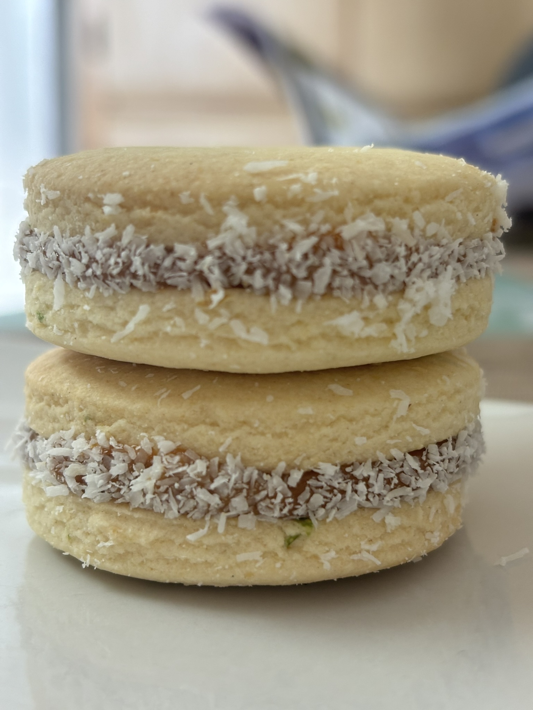
Cookies & Sweets
Our cookies start with South American tradition — buttery shortbread sandwiched with house-made dulce de leche — and expand into the flavors we love to share.
Alfajores are the centerpiece: two melt-in-your-mouth rounds of tender shortbread, filled with slow-cooked dulce de leche and finished with a dusting of powdered sugar. They're delicate, indulgent, and deeply satisfying.
Vegan Butter Cookies prove that plant-based can mean wonderfully rich. Crisp on the edges, tender in the center — made with high-quality vegan butter and real vanilla.
Evie's Cookies are a house classic — the kind of cookie that disappears fast at any gathering.
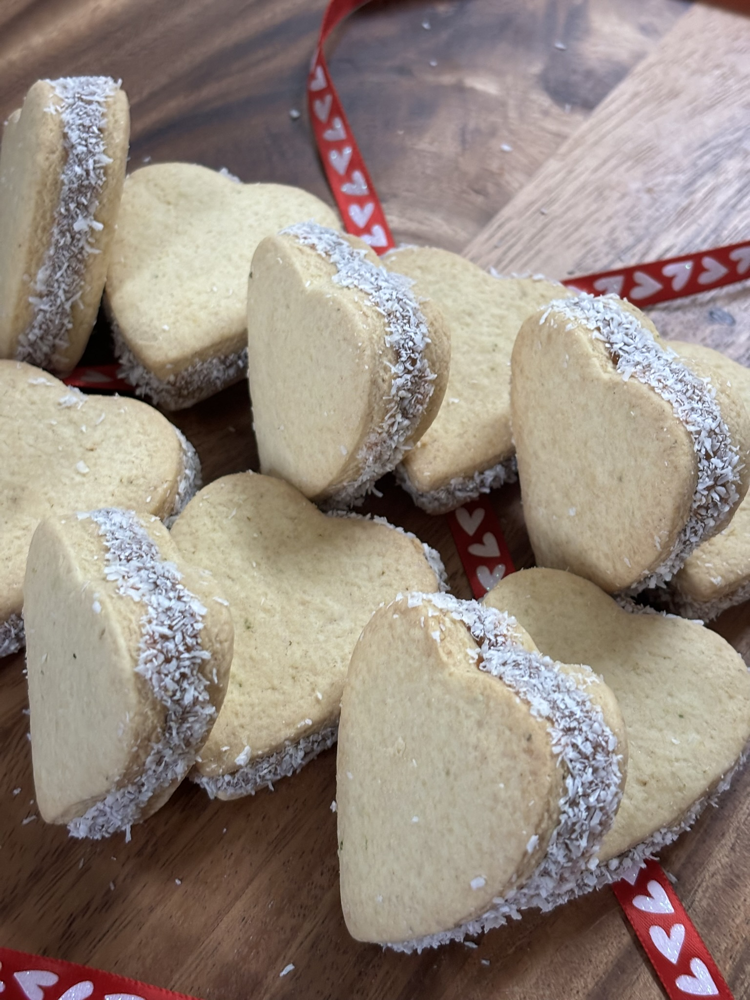
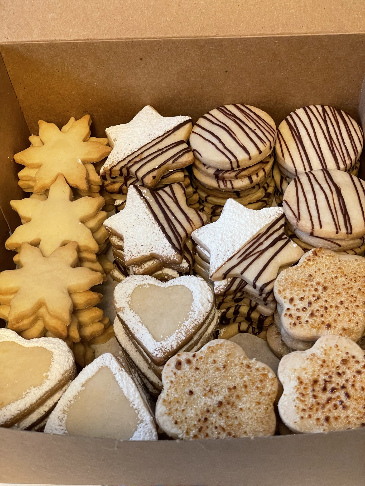
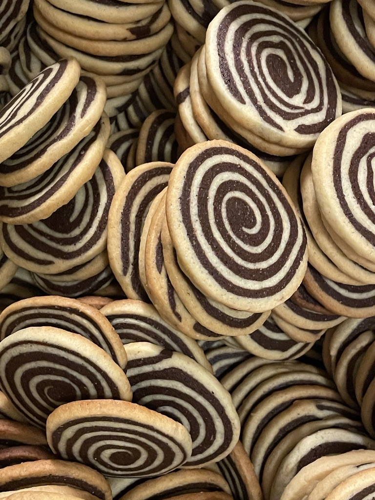

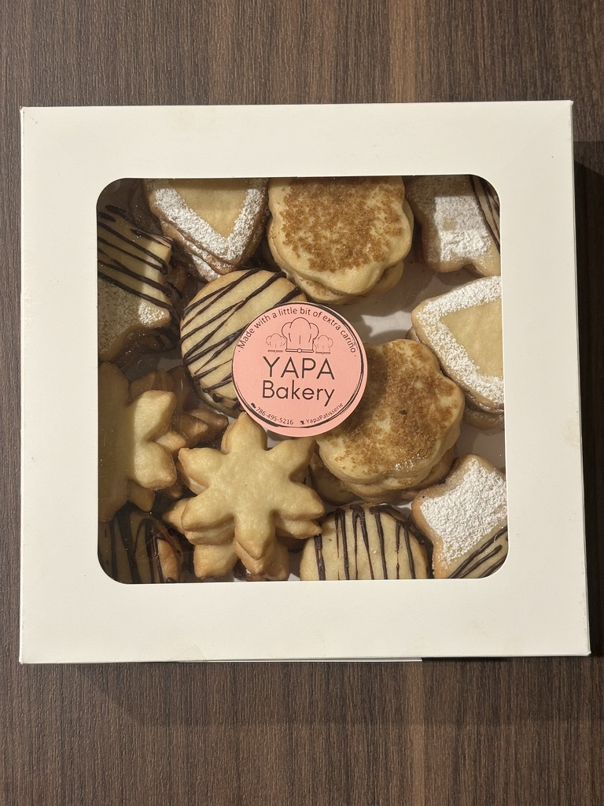
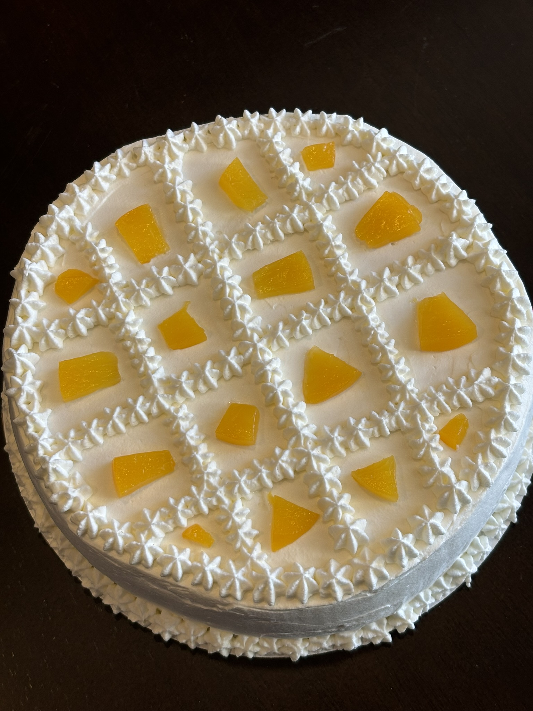
Cakes & Desserts
Our cakes are made for moments worth celebrating — and for the weeknight when you just need something magnificent.
Tres Leches is the ultimate Latin American celebration cake — a light sponge soaked in a blend of three milks until impossibly moist, crowned with fresh whipped cream. It's an experience, not just a dessert.
Tartufo — our Italian-inspired ice cream truffle — hides a rich center beneath a chocolate shell. It's elegant, dramatic, and gone too soon.
Cheese Flan adds a smooth, rich custard option with caramelized topping and just the right sweetness.
We also offer Red Velvet, Marble Cake, and our signature Truffle Cake — a densely chocolatey layer cake for serious chocolate lovers. Whole cakes available for pickup; slices on select dates.
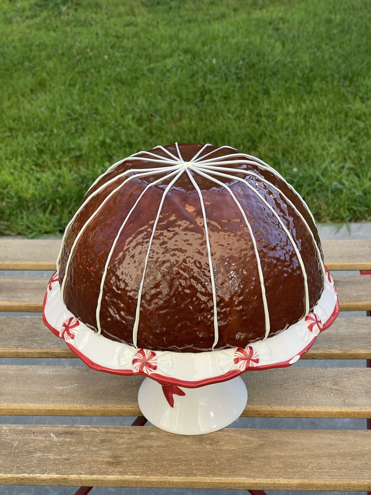
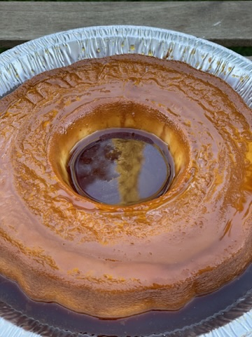
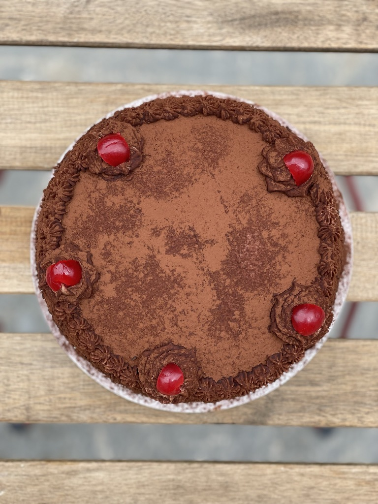
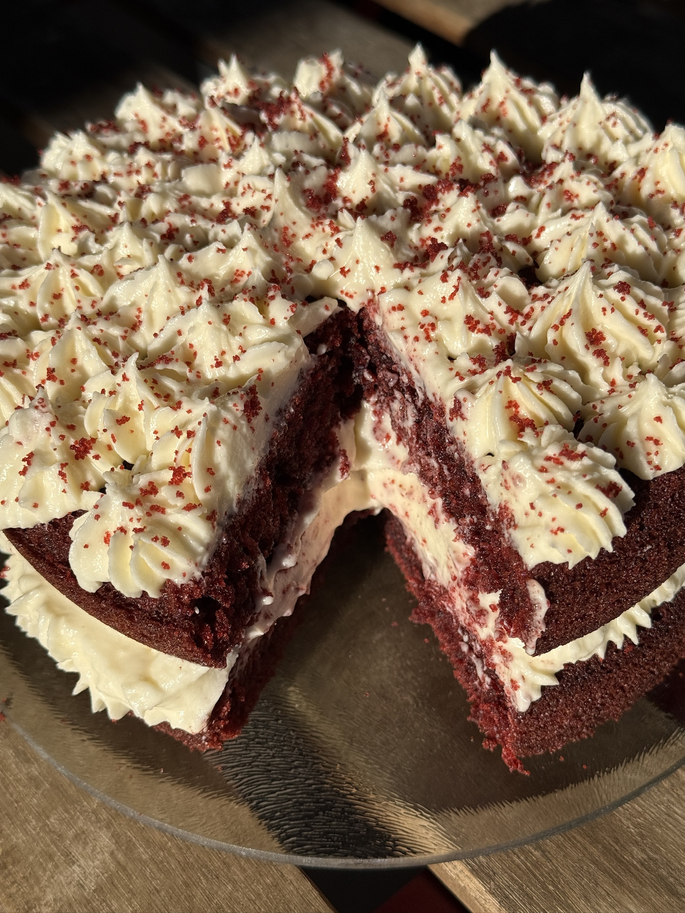
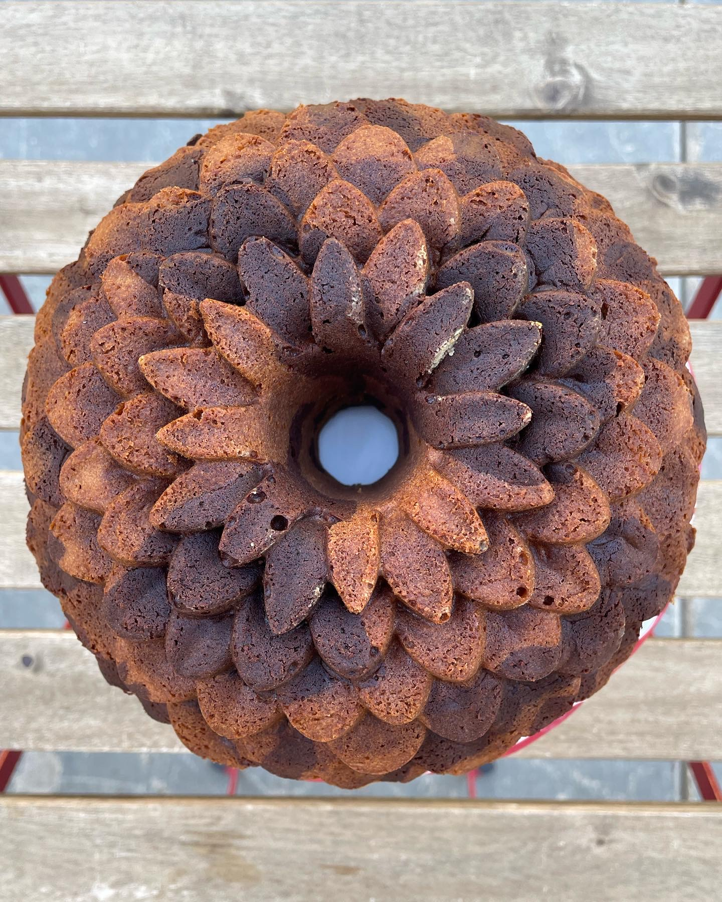
Ready to order?
Orders open 10 days before each Saturday pickup and close the Monday before (5 days out). Pre-payment required at order time.
Order for Pickup Read the FAQ